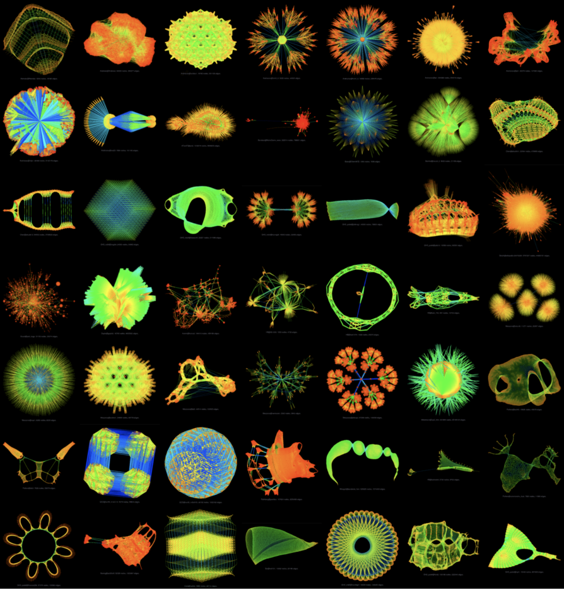

Graph Drawing Algorithm
Table of Contents
1. GraphViz sfdp
SuiteSparse Matrix Collection has a gallery of their sparse matrices visualized by a graph drawing program created by Yifan Hu. It is reallly beautiful. The graphing algorithm is available through GraphViz (sfdp) [http://yifanhu.net/software.html].

Figure 1: Sample Gallery of the SuiteSparse Matrix Collection